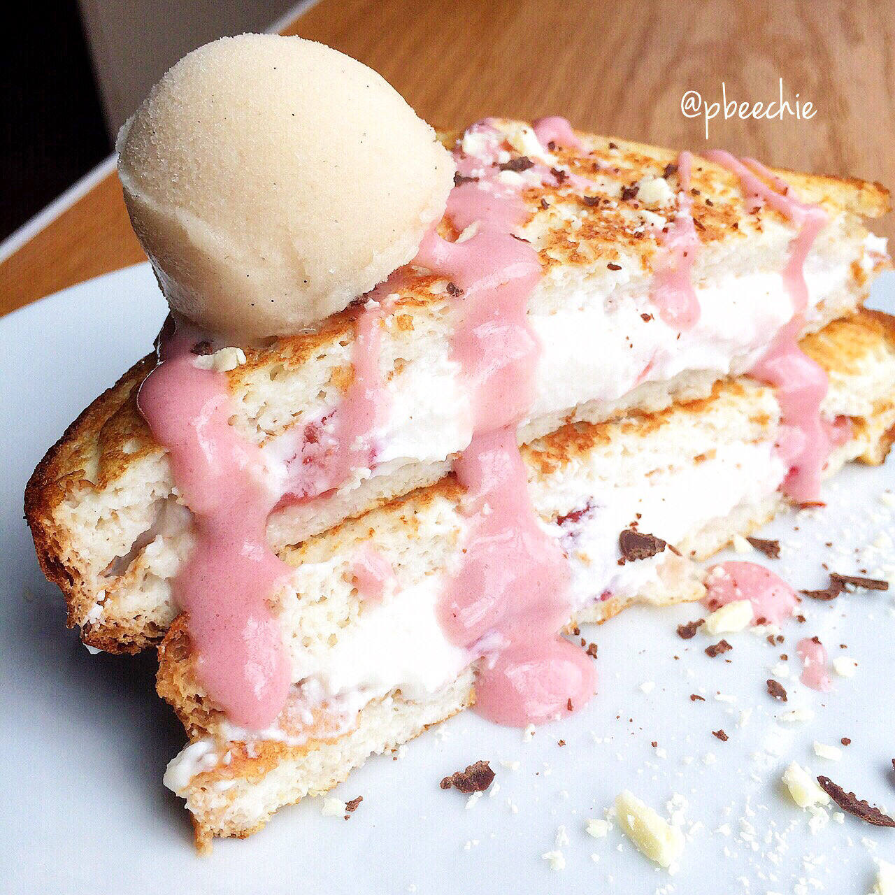

Strawberry 'Cheesecake' Stuffed French Toast

ANNOUNCEMENTS 1: I ate food today. It was yum. Strawberry 'cheesecake' stuffed French toast topped with sugar free chocolate, strawberry milkshake cellucor protein drizzle, and vanilla bean ice cream (healthy Wink Desserts brand). 2: I was given the green light by mister foot doctor man to use the stationary bike and elliptical again okay hayyy. 3: Also found out that I have osteopenia which now makes more sense how I broke my foot simply walking... So. That's a thing. 4: My Arctic Zero giveaway is almost over! It ends Wednesday so enter before it's over!! : I found a penny yesterday in the crosswalk!!! 6: I lost my penny today ;(
Strawberry 'Cheesecake' Stuffed French Toast
Serves: 1
Toast Ingredients
-
2 pieces of bread
-
2 egg whites
-
2 TBSP unsweetened almond milk
-
1 stevia packet
-
1/2 tsp vanilla extract
Filling Ingredients
-
1/3 cup lowfat cottage cheese
-
1 TBSP vanilla protein powder
-
1/2 TBSP coconut flour
-
1 stevia packet
-
1/2 tsp vanilla extract
-
1/2 cup frozen strawberries
Whisk together all of the 'toast ingredients' except for the bread. Soak the bread in the mix for a minute per side until softened. Cook in a large pan sprayed with nonstick spray, 3 mins per side until the egg is fully cooked and each side is lightly browned. Mix together all of the 'filling ingredients' except for the strawberries. Use a handblender to blend until smooth. Microwave the strawberries, draining any liquid that may cook off. Stir the strawberries into the filling. Spread in between the French toast, making a sammich. Slice in half and enjoyyyy!
Nutritional Information for everything (including toppings I used): 358 cals; 6 g ffat, 33 g carbs (9 g fiber), 44 g protein